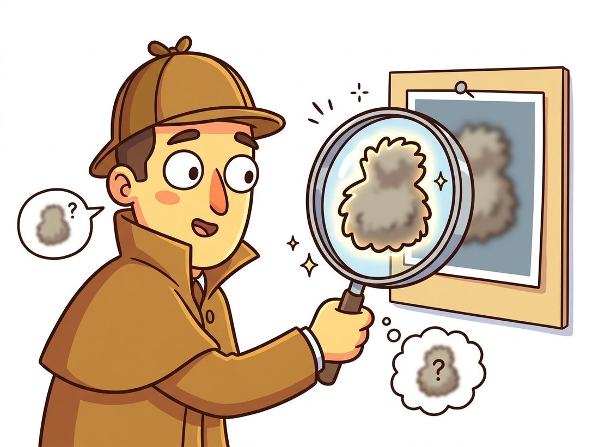

"To make something sharper, I first blur it. The committee asked me to repeat that. I repeated it. They asked me to leave. The results speak for themselves, loudly, with halos."
An Overcaffeinated Sharpening Filter
Sharpening does not add detail; it finds the detail an image already has and exaggerates it, by subtracting a blurred copy and amplifying what remains. This section develops that one idea, unsharp masking, three ways: as the photographer's blur-subtract-add recipe, as a single $3 \times 3$ kernel built from the Laplacian, and as a per-pixel contract with consequences (halos, amplified noise, clipped highlights). It also draws a line that matters for the rest of the book: sharpening boosts recorded contrast, while true deblurring (deconvolution, in Chapter 7) and generative restoration (in Chapter 33) attempt to recover or invent what was never recorded.
The previous section smoothed: positive weights, summing to one, averaging detail away. This section runs the machine in reverse. The clients are everywhere: every camera pipeline sharpens after demosaicking, every scan-to-PDF tool sharpens text, every photo editor ships a sharpen slider, and radiologists have relied on unsharp masking since the era of film. All of them use, almost unmodified, the technique this section builds.
1. What "Sharp" Means to an Eye and to a Filter Beginner
Perceived sharpness is mostly edge contrast: how rapidly intensity changes where two regions meet. An in-focus lens produces a step-like transition over one or two pixels; defocus, camera shake, sensor diffusion, and the smoothing of Section 3.2 all stretch that transition over more pixels, and the eye reads the stretch as blur. In the frequency vocabulary previewed in Chapter 4, blur attenuates high frequencies; sharpening is any operation that boosts them back.
That framing immediately suggests the recipe. A blurred copy of an image contains its low frequencies. Subtracting the blurred copy from the original therefore isolates the high frequencies: edges, texture, fine detail, and, inconveniently, noise. Add a multiple of that difference back to the original and every transition steepens. This is unsharp masking, named not for what it does but for the blurred ("unsharp") mask at its core.
Unsharp masking predates digital computing by decades. Darkroom technicians in the 1930s would contact-print a deliberately defocused positive of a negative onto film, sandwich the two, and print through the pair: the fuzzy positive partially canceled the negative's low frequencies, letting edges through with extra punch. Astronomers refined the trick for telescope plates. When Photoshop 1.0 shipped an "Unsharp Mask" tool in 1990, it was a software port of a sixty-year-old analog hack, and the confusing name came along for the ride.
2. Unsharp Masking, Step by Step Intermediate
Formally, with $G_\sigma * I$ denoting Gaussian blur from Section 3.2:
$$ \underbrace{M}_{\text{mask}} = I - G_\sigma * I, \qquad \underbrace{S}_{\text{sharpened}} = I + \alpha\, M $$
Two knobs control everything. The blur scale $\sigma$ (the "radius" slider in photo editors) sets which details count as detail: small $\sigma$ targets fine texture and pixel-scale edges, large $\sigma$ boosts broader local contrast. The gain $\alpha$ (the "amount" slider) sets how much the chosen details are amplified; values between 0.5 and 1.5 are typical, and beyond 2 the artifacts of Section 4 arrive quickly. Figure 3.3.1 traces the full pipeline on a one-dimensional edge, and is worth a careful read: the overshoot and undershoot it shows at the sharpened edge are not a defect of the diagram but the entire mechanism of perceived sharpening.
The implementation is three lines around a Gaussian blur, with one OpenCV idiom worth knowing: cv2.addWeighted computes $\beta_1 I_1 + \beta_2 I_2 + \gamma$ with saturation handling, so the whole formula $S = (1 + \alpha) I - \alpha (G_\sigma * I)$ fits in a single fused call.
# Unsharp masking in two OpenCV calls: blur the image, then fuse
# S = (1 + alpha) * img - alpha * blurred with addWeighted, which
# saturates to [0, 255] and so avoids the uint8 subtraction wraparound bug.
import cv2
img = cv2.imread("cathedral.jpg") # works per-channel on color too
sigma, alpha = 2.0, 0.7 # radius and amount
blurred = cv2.GaussianBlur(img, (0, 0), sigma)
# S = (1 + alpha) * img - alpha * blurred, saturated to [0, 255]
sharp = cv2.addWeighted(img, 1 + alpha, blurred, -alpha, 0)
cv2.imwrite("cathedral_sharp.jpg", sharp)
# Visual check: edge transitions narrow from ~4 px to ~2 px;
# flat sky regions are numerically unchanged (mask is ~0 there).cv2.GaussianBlur and a fused cv2.addWeighted sum with weights $1 + \alpha$ and $-\alpha$, where addWeighted handles the uint8 saturation that a naive NumPy subtraction would corrupt by wraparound.
That saturation comment deserves a flag, because it is this section's most common bug in the wild. Computing img - blurred directly on uint8 arrays wraps negative values around to large positive ones (the dtype trap from Chapter 0), splattering bright garbage along every edge. Either use addWeighted, or cast to a signed or floating type before subtracting.
3. Sharpening as a Single Kernel Intermediate
Because blurring, subtracting, and scaling are all linear and shift-invariant, the entire unsharp pipeline must itself be a single convolution, and Section 3.1's algebra tells us how to find it. Writing $\delta$ for the identity (impulse) kernel:
$$ S = (1+\alpha)\,I - \alpha\,(G_\sigma * I) = \big( (1+\alpha)\,\delta - \alpha\,G_\sigma \big) * I $$
One kernel, applied once. If we replace the Gaussian with the smallest possible smoother and take $\alpha = 1$, the formula lands on the most famous sharpening kernel in existence, which the kernel gallery of Section 3.1 previewed:
$$ \begin{bmatrix} 0 & -1 & 0 \\ -1 & 5 & -1 \\ 0 & -1 & 0 \end{bmatrix} \;=\; \delta \;-\; \begin{bmatrix} 0 & 1 & 0 \\ 1 & -4 & 1 \\ 0 & 1 & 0 \end{bmatrix} $$
The matrix being subtracted is the Laplacian kernel, the discrete second derivative that Section 3.4 studies in depth. Subtracting the second derivative steepens transitions; this identity, $S = I - \nabla^2 I$, is the differential-equation view of sharpening, and it explains why the sharpen kernel's weights sum to 1 (brightness preserved) while the Laplacian's sum to 0 (responds only to change). The center value 5 is not arbitrary: it is $1 + 4$, the identity plus the Laplacian's center magnitude. The identity is not just an aesthetic observation; it is checkable in four lines, and checking it is a worthwhile habit whenever two filter pipelines are claimed to be equivalent.
# Verify the algebraic identity S = I - Laplacian: the center-5 sharpening
# kernel applied in one pass must equal computing the Laplacian explicitly
# and subtracting it. A zero max-difference confirms they are the same op.
import cv2
import numpy as np
img = cv2.imread("cathedral.jpg", cv2.IMREAD_GRAYSCALE)
kernel = np.array([[ 0, -1, 0],
[-1, 5, -1],
[ 0, -1, 0]], dtype=np.float32)
one_pass = cv2.filter2D(img, -1, kernel) # single-kernel sharpen
# Two-step pipeline: compute the Laplacian, subtract it from the image.
lap = cv2.Laplacian(img.astype(np.float32), cv2.CV_32F, ksize=1)
two_step = np.clip(img.astype(np.float32) - lap, 0, 255).astype(np.uint8)
print(np.abs(one_pass.astype(int) - two_step.astype(int)).max())
# Expected output: 0 (bit-identical: the kernel IS identity minus Laplacian)cv2.filter2D pass produces a bit-identical result (max difference 0) to explicitly computing cv2.Laplacian and subtracting it from the image.Unsharp masking redistributes contrast that the sensor already captured; it cannot resurrect detail the optics never delivered. A truly out-of-focus image sharpened hard becomes a crisp-looking rendition of blur, with halos. Recovering lost detail requires modeling the blur and inverting it (deconvolution, Chapter 7) or hallucinating statistically plausible detail with a generative model (Chapter 33). Knowing which of the three regimes a problem is in (enhance, invert, or generate) is a core practitioner judgment, and mislabeling it is how forensic teams end up testifying about "enhanced" license plates (the illustration below makes the point).

Our blur-plus-addWeighted recipe, with its dtype caveats, is one call in scikit-image: unsharp_mask(img, radius=2.0, amount=0.7). The reduction is modest in lines (roughly 6 to 1) but large in foot-guns avoided: the library converts to float internally, handles any input dtype without wraparound, processes multichannel images correctly via channel_axis, and clips the result back into the valid range. OpenCV alternatively offers cv2.detailEnhance for a stylized edge-aware boost built on the filters of Section 3.5.
4. The Fine Print: Halos, Noise, and Clipping Advanced
The overshoot that creates sharpness becomes a visible artifact the moment it outgrows the edge it decorates. Three failure modes account for nearly all sharpening complaints in production, and all three are predictable from the formula.
Halos. The over/undershoot of Figure 3.3.1 extends roughly $\sigma$ pixels to each side of an edge. With a large radius and strong amount, dark objects against bright skies grow glowing white outlines, the signature of over-processed high-dynamic-range (HDR) landscapes. The fix is almost always a smaller $\sigma$, not a smaller $\alpha$: halo width is set by the radius.
Noise amplification. The mask $I - G_\sigma * I$ contains everything the blur removed, and Section 3.2 taught that high-frequency noise is the first thing any blur removes. Sharpening therefore amplifies noise preferentially, which is why camera pipelines denoise before sharpening, never after, and why sharpen sliders applied to high-ISO shots produce instant grain. Production implementations add a threshold: mask values with magnitude below a few gray levels are zeroed before the gain is applied, so smooth-region noise stays unamplified while real edges, whose mask values are large, pass through. The scikit-image and Photoshop implementations both expose this knob.
Clipping. Overshoot near already-bright pixels saturates at 255 (and undershoot at 0), flattening highlight texture into white plateaus. Working in float and clipping once at the end, or sharpening the luminance channel only (in the color spaces of Chapter 1, to also avoid color fringing), contains the damage.
Who: The imaging platform team at a large second-hand fashion marketplace, processing about two million seller-uploaded photos per day.
Situation: An A/B test showed that mildly sharpened listing photos lifted click-through by 3 percent, so a global unsharp mask (radius 3, amount 1.5) was added to the upload pipeline.
Problem: Within weeks, returns citing "item looked different" rose measurably in the knitwear and silk categories. Investigation found two culprits: halos along garment silhouettes against the white photo-booth background made colors look oversaturated at the edges, and amplified sensor noise on dim phone photos read as fabric pilling. Buyers were, reasonably, judging texture from artifacts.
Decision: The team replaced the global setting with category-aware parameters (radius 1.2 for textiles), added a threshold of 4 gray levels so smooth fabric stayed smooth, sharpened only the luminance channel, and routed photos whose noise estimate (from a flat-patch variance probe) exceeded a bound through a denoiser first.
Result: The click-through gain survived (2.6 percent) while texture-related return complaints fell back to baseline within one quarter.
Lesson: Sharpening parameters are content decisions, not pipeline constants. The threshold parameter, absent from textbook formulas but present in every serious implementation, is the difference between enhancing detail and manufacturing it.
5. High-Boost Filtering and Where Sharpening Goes Next Intermediate
A small generalization closes the classical story. High-boost filtering replaces the "1" multiplying the original image with a gain $A \ge 1$: $S = A \cdot I - G_\sigma * I$ (our unsharp mask is the case $A = 1 + \alpha$ rescaled). Values of $A$ slightly above 1 blend brightening with sharpening, a trick from the film era that occasionally still earns its keep on flat scans. More consequential for modern pipelines is edge-aware sharpening: replace the Gaussian in the mask with the bilateral or guided filter of Section 3.5, and the mask stops swinging across strong edges, suppressing halos at their source. That construction, base layer plus boosted detail layer, is the backbone of HDR tone mapping and every "clarity" slider shipped in the last decade.
The 2024-2026 restoration literature has largely left contrast redistribution behind and crossed into generation. SUPIR (Yu et al., CVPR 2024, arXiv:2401.13627) couples a 2.6-billion-parameter diffusion prior with degraded inputs to produce restorations whose "recovered" textures are synthesized, not measured; DiffBIR (ECCV 2024, arXiv:2308.15070) splits the job into a degradation-removal stage followed by a generative detail stage. The results can be spectacular and are categorically different from this section's mathematics: a diffusion restorer asked to sharpen a blurry face will invent a plausible face. For consumer photos that is often acceptable; for medical, forensic, and scientific imagery it is a correctness hazard, and the evaluation and governance frameworks of Chapter 37 exist in part to police this exact boundary. Unsharp masking's great virtue in 2026 is that it provably cannot lie about anything the sensor did not record.
Using the identity $S = ((1+\alpha)\delta - \alpha G) * I$, derive the single $3 \times 3$ kernel for $\alpha = 2$ with the $3 \times 3$ box filter standing in for $G$. Verify that its weights sum to 1, identify which entries are negative and why, and predict (without computing) what this kernel does to a perfectly flat image and to a single-pixel impulse.
Implement unsharp_threshold(img, sigma, alpha, t): compute the float mask $I - G_\sigma * I$, zero all mask values with $|M| < t$, then return $I + \alpha M$ clipped to [0, 255]. Test on a photo with visible sensor noise at $t \in \{0, 2, 4, 8\}$ and report, for each $t$, the standard deviation of a flat background patch and your visual judgment of edge crispness. Confirm the claim from this section that thresholding protects flat regions at minimal cost to edges.
Create a synthetic image: a dark gray rectangle (value 60) on a light gray field (value 200). Apply unsharp masking across a grid of $\sigma \in \{1, 2, 4, 8\}$ and $\alpha \in \{0.5, 1, 2\}$, and for each result measure (a) the peak overshoot value adjacent to the edge and (b) the width in pixels of the overshoot region. Which parameter controls each measurement? Relate your findings to Figure 3.3.1 and state a practical rule for choosing $\sigma$ when halos must remain invisible at 100 percent zoom.